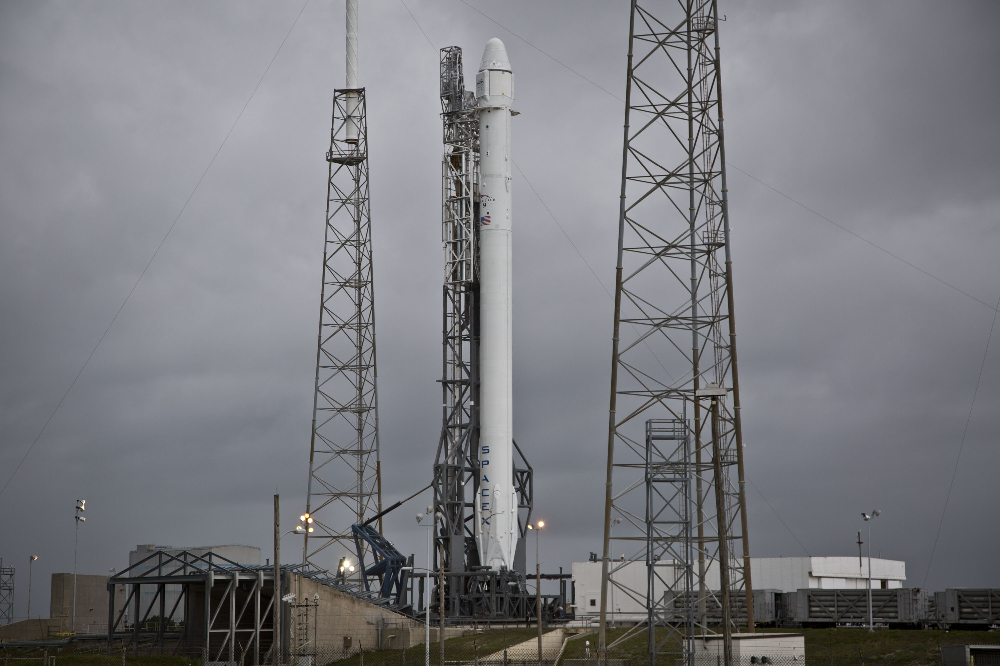
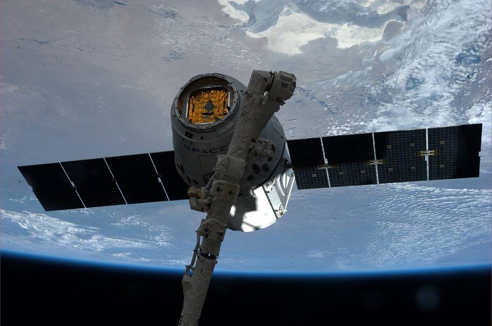
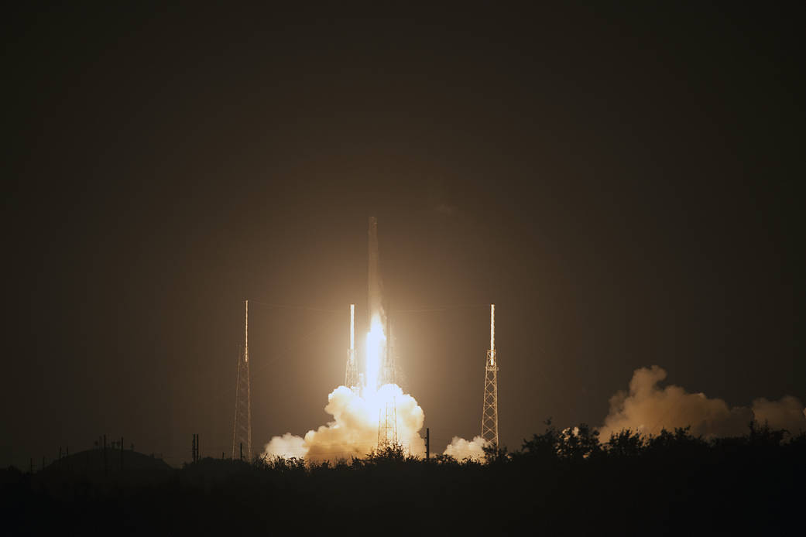
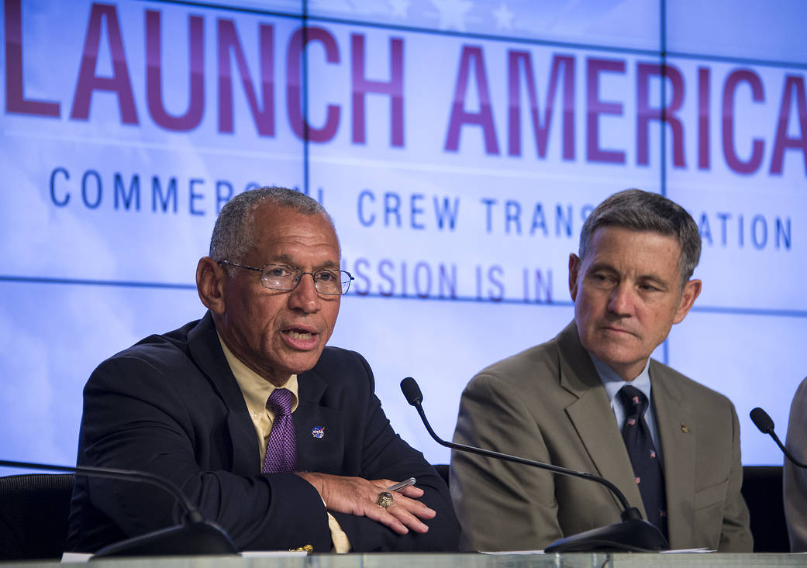

Storia SpaceX · Ottava parte · 2014
Imparare a rientrare, diventare un servizio
Sei lanci, nuovi clienti e le prime gambe del Falcon 9. Mentre Dragon rifornisce la stazione, SpaceX studia il ritorno del primo stadio e viene scelta per sviluppare il trasporto degli astronauti. Il riuso, però, non è ancora una realtà operativa.
Indice Storia SpaceXUn razzo nuovo deve diventare affidabile
Alla fine del 2013 SpaceX aveva portato in volo Falcon 9 v1.1 e raggiunto il mercato geostazionario con SES-8. Il 2014 comincia da quella conquista, ma pone una domanda diversa: l'azienda può trasformare una nuova configurazione in un servizio capace di rispondere a clienti differenti? Non basta dimostrare che un razzo funziona una volta. Occorre costruirne altri, prepararli, consegnare i satelliti nelle orbite concordate e ripetere le operazioni senza perdere il controllo dei tempi e della qualità.
Il 6 gennaio Thaicom 6 parte da Cape Canaveral. L'operatore thailandese conferma il successo del lancio e, dopo le verifiche in orbita, l'entrata in servizio del satellite il primo febbraio. È una distinzione importante: il vettore apre la strada, ma il lavoro del cliente continua dopo la separazione. Per chi vende telecomunicazioni, il risultato finale non è la fotografia del decollo; è una capacità disponibile per gli utenti. Falcon 9 comincia l'anno dentro questa catena industriale. [1]
Parallelamente prosegue il programma di rientro. Le due attività si incontrano sul medesimo lanciatore, senza avere ancora lo stesso grado di maturità. Il trasporto orbitale viene venduto; il recupero del primo stadio è un esperimento. Leggere l'anno come se i booster fossero già riutilizzati cancellerebbe proprio la distanza che SpaceX stava cercando di colmare.
CRS-3: Dragon parte con quattro gambe sotto di sé
Il 18 aprile decolla CRS-3, terza missione di rifornimento prevista dal contratto Commercial Resupply Services. È il primo volo di Dragon sul Falcon 9 v1.1. Sul primo stadio compaiono quattro gambe ripiegate lungo il corpo del razzo: non servono alla capsula né al suo aggancio alla stazione. Appartengono al percorso sperimentale del lanciatore e devono essere aperte durante la discesa verso l'Atlantico. La loro presenza rende visibile una trasformazione che nel 2013 era rimasta soprattutto nei dati dei motori e della traiettoria. [2]
Il 20 aprile Dragon viene afferrata dal Canadarm2 e successivamente collegata al lato rivolto verso la Terra del modulo Harmony. Anche qui il linguaggio conta: questa Dragon non esegue un attracco autonomo. Il braccio robotico la cattura e la porta al punto di installazione. Il servizio richiede quindi un incontro fra veicolo, controllori ed equipaggio della ISS, non soltanto una buona prestazione del razzo. [3]
Tra i carichi c'è OPALS, un dimostratore del Jet Propulsion Laboratory per le comunicazioni ottiche. Trasportato sulla stazione, sperimenterà l'invio di dati mediante laser; il 5 giugno trasmetterà verso Terra un video ad alta definizione. Questo piccolo esperimento mostra cosa significhi rendere accessibile la piattaforma orbitale: una missione logistica permette a un altro gruppo di verificare una tecnologia che non riguarda direttamente SpaceX. Il valore del trasporto sta anche nei risultati che rende possibili agli altri. [4]

.jpg){kind=link}
Una discesa controllata non è ancora un recupero
Dopo la separazione da CRS-3, il primo stadio prova a rallentare e scendere in modo controllato. Nella conferenza successiva al lancio, i primi dati vengono descritti come compatibili con un arrivo morbido sull'oceano; il mare agitato impedisce di recuperare il veicolo. È un progresso rispetto a uno stadio abbandonato alla caduta, ma non equivale a riportare in officina una macchina pronta per un altro volo. Il risultato va conservato nella sua dimensione: controllo della discesa e acquisizione di dati, non riutilizzo. [5]
Il primo stadio, inoltre, non compie un'orbita attorno alla Terra. Ha spinto il resto del razzo durante la prima parte dell'ascesa e si separa su una traiettoria suborbitale. Il suo problema è gestire velocità, orientamento e attraversamento dell'atmosfera, quindi raggiungere la zona prevista con abbastanza propellente per frenare. Parlare genericamente di rientro dall'orbita confonderebbe questo percorso con quello della capsula Dragon.
Il margine economico resta da dimostrare. Un veicolo che tocca l'acqua può essere danneggiato o andare perduto; uno riportato intero deve comunque essere ispezionato. Fra controllare il moto, conservare l'hardware e certificarne un nuovo impiego ci sono passaggi distinti. Le gambe affrontano l'ultima parte della discesa, ma non sostituiscono motori, guida, protezione termica o conoscenza dei carichi. L'atterraggio è il punto visibile di una catena molto più lunga.

Da Grasshopper a F9R: il laboratorio resta necessario
A McGregor il lavoro continua con F9R, un dimostratore basato sul primo stadio del Falcon 9 v1.1. Il video ufficiale pubblicato il 18 aprile mostra un volo fino a 250 metri, seguito dal ritorno sul piazzale. Le gambe sono già aperte alla partenza: è una configurazione sperimentale diversa da quella del razzo che porta Dragon nello spazio. Nel video successivo, pubblicato il 2 maggio, la quota arriva a mille metri. L'eredità di Grasshopper passa così a un veicolo più vicino al lanciatore operativo. [6][7]
Queste prove isolano problemi che un lancio orbitale presenta tutti insieme. Permettono di osservare salita, spostamento e discesa di un veicolo propulso in un ambiente controllato. Non riproducono però la velocità e il riscaldamento del ritorno dopo una missione. Il dimostratore e gli esperimenti sull'Atlantico sono complementari: il primo rende alcune variabili più accessibili, i secondi espongono il progetto a condizioni che non si possono ridurre a un salto sopra il piazzale.
Il 22 agosto F9R Dev1 venne distrutto durante una prova: un'anomalia aveva attivato il sistema automatico di terminazione. [8]
La perdita interrompe la vita di quel dimostratore. Il programma, tuttavia, non coincide con un solo esemplare: comprende anche l'analisi dei voli reali. Per comprenderne il progresso bisogna tenere separati l'esito di una prova, le informazioni ottenute e la disponibilità di hardware per continuarla. Sono dimensioni collegate, non intercambiabili.
Il mercato misura le consegne, non le promesse
Il 14 luglio Falcon 9 porta in orbita sei satelliti ORBCOMM di seconda generazione. Il cliente comunica che sono stati inseriti nell'orbita prevista e avvia verifiche prima del servizio commerciale. La rete serve comunicazioni fra macchine e applicazioni come il monitoraggio delle navi attraverso l'AIS. Non è il piccolo satellite secondario perso nella missione CRS-1: questa volta ORBCOMM è il cliente principale e il lancio trasporta un gruppo della nuova costellazione. [9]
Seguono AsiaSat 8, il 5 agosto, e AsiaSat 6, il 7 settembre. Dopo Thaicom 6, questi voli consolidano l'accesso al mercato delle telecomunicazioni geostazionarie. La consegna del vettore avviene su una traiettoria di trasferimento; il satellite deve poi raggiungere la propria collocazione operativa. Anche per questo non si può confondere il successo del lancio con ogni successiva fase della missione del cliente. [10]
AsiaSat aveva preparato alternative al fornitore americano: il rapporto annuale 2012 documenta accordi di riserva con altri operatori di lancio. È un dettaglio utile per leggere la concorrenza senza mitologia. Il cliente può scegliere un nuovo vettore e contemporaneamente proteggersi dalle sue incertezze. La fiducia industriale non nasce dalla cancellazione del rischio, ma dalla possibilità di gestirlo mediante contratti, verifiche e opzioni. SpaceX deve diventare conveniente anche dentro questa prudenza, non soltanto convincere chi segue i suoi esperimenti. [11]
Una serie più ampia di missioni porta inoltre una domanda interna: come rendere ripetibile la preparazione? Satelliti e capsule hanno esigenze differenti, mentre produzione, trasporto del razzo e disponibilità della rampa devono trovare un ritmo comune. La crescita non consiste soltanto nell'aumentare il numero dei decolli. Consiste nel ridurre quanto ogni volo dipende da soluzioni eccezionali, senza trasformare la ripetizione in un automatismo che nasconda i problemi.
CRS-4: due lavori sotto la stessa fiamma
Il 21 settembre, alle 1:52 del mattino in Florida, parte CRS-4. Dragon trasporta rifornimenti ed esperimenti per gli equipaggi della ISS. Tra gli strumenti c'è ISS-RapidScat, destinato a misurare i venti sulla superficie degli oceani. Il rapporto fra lancio commerciale e ricerca torna concreto: il razzo porta una piattaforma logistica, e quella piattaforma permette di installare un sensore utile a osservare la Terra. [12]
Intanto NASA organizza osservazioni del primo stadio con aerei e sensori infrarossi. La collaborazione documentata dal programma SCIFLI comprende CRS-4 e contribuisce allo studio della retropropulsione in condizioni supersoniche. Un razzo che accende i motori durante la discesa modifica il flusso attorno a sé: osservare quel comportamento interessa anche la ricerca sulle tecnologie di ingresso e atterraggio. Non significa che Falcon 9 stia provando una missione marziana, né che i due ambienti siano identici. [13]
Il carico prosegue verso la stazione; la parte inferiore del lanciatore diventa invece oggetto di misure. È una caratteristica decisiva di questa fase: il programma sperimentale può sfruttare un volo che ha già un obiettivo contrattuale. Questo non rende secondarie le responsabilità verso il cliente. Al contrario, obbliga a distinguere chiaramente il servizio acquistato dal risultato della prova aggiunta.

Il servizio non finisce sulla stazione
Dragon offre anche un percorso in direzione opposta. Il 18 maggio CRS-3 ammarisce nel Pacifico, a ovest della Baja California, riportando oltre 3.500 libbre di carico NASA e campioni scientifici, circa 1.600 chilogrammi. L'agenzia prevede la rimozione al porto di alcuni materiali, compreso un congelatore con campioni, per restituirli rapidamente ai ricercatori. La missione comprende quindi una seconda consegna: non soltanto dalla Terra alla stazione, ma dal laboratorio orbitale a quelli che possono analizzarne i risultati. [17]
CRS-4 conclude il proprio viaggio il 25 ottobre, ancora nel Pacifico, con 3.276 libbre di carico e campioni, circa 1.486 chilogrammi. Anche in questo caso NASA descrive una catena di recupero, trasferimento al porto e restituzione di parte del materiale entro 48 ore. La capsula deve poi raggiungere McGregor per le attività successive. Numeri e tempi del ritorno mostrano una componente del servizio meno spettacolare del decollo, ma essenziale per il suo utilizzatore. [18]
È significativo che nello stesso anno il recupero della capsula sia parte della prestazione operativa, mentre quello del primo stadio resti sperimentale. Le due macchine hanno forme, protezioni e funzioni differenti. Il successo di Dragon non dimostra automaticamente che un lungo stadio del Falcon 9 possa tornare intatto e ripartire. La parola recupero indica procedure diverse; occorre sempre precisare quale veicolo viene conservato e per quale impiego.
Questa distinzione aiuta anche a valutare l'affidabilità. Una missione può consegnare bene il carico e produrre un esperimento di discesa incompleto. Viceversa, un dato utile sul primo stadio non compenserebbe una consegna mancata. Il cliente compra una prestazione definita; il programma di sviluppo cerca conoscenze per modificarne in futuro il costo e l'organizzazione. Nel 2014 questi obiettivi convivono, ma non possono ancora essere riuniti in un unico giudizio sul riuso.
39A e Commercial Crew: preparare un altro servizio
Il 14 aprile NASA e SpaceX sottoscrivono una concessione ventennale della rampa 39A al Kennedy Space Center. Il luogo appartiene alla storia di Apollo e dello Shuttle, ma l'accordo riguarda il suo futuro impiego commerciale. Non è una certificazione del Falcon 9 per gli astronauti e non sposta immediatamente tutti i lanci: le sei missioni orbitali del 2014 partono da SLC-40. La nuova infrastruttura allarga piuttosto lo spazio disponibile per i programmi successivi. [14]
Il 16 settembre arriva la scelta per Commercial Crew Transportation Capability. NASA seleziona Boeing e SpaceX; i contratti annunciati valgono rispettivamente 4,2 e 2,6 miliardi di dollari. L'obiettivo è completare sviluppo e certificazione di sistemi capaci di trasportare equipaggi alla ISS. Per SpaceX significa portare Dragon oltre il ruolo cargo, affrontando requisiti specifici per le persone, le operazioni e la sicurezza. Il contratto include una dimostrazione con equipaggio prima del servizio operativo. [15]
La selezione non dimostra che la capsula sia già pronta. Stabilisce un percorso finanziato e verificabile, nel quale l'agenzia mantiene un ruolo di controllo. Il 19 dicembre NASA approva il primo traguardo contrattuale di SpaceX: una revisione del piano di certificazione. L'anno si chiude dunque con una prospettiva concreta per gli astronauti, ma ancora con molto lavoro da svolgere. Presentare quell'annuncio come l'inizio dei voli umani confonderebbe l'assegnazione del programma con il suo completamento. [16]

Sei lanci, nessun primo stadio ancora riutilizzato
Il bilancio orbitale del 2014 comprende sei missioni Falcon 9: Thaicom 6, CRS-3, ORBCOMM OG2, AsiaSat 8, AsiaSat 6 e CRS-4. Le prove verticali di F9R non entrano in questo conteggio. Due voli servono la logistica della stazione, quattro clienti satellitari: l'azienda deve sostenere nello stesso anno mercati e profili diversi. Il numero resta piccolo rispetto alla cadenza che verrà, ma racconta un'organizzazione già impegnata a passare dalla dimostrazione alla continuità.
Il recupero presenta un bilancio differente. Ci sono gambe, discese controllate, dimostratori e osservazioni tecniche, ma nessun primo stadio tornato a volare. È questo il punto da cui prosegue la storia: rendere il luogo di arrivo una superficie sulla quale conservare il razzo, anziché soltanto una zona d'oceano nella quale misurare la discesa. Il 2014 costruisce gli strumenti e accumula esperienza; la verifica dell'atterraggio e le difficoltà del 2015 appartengono al capitolo successivo.
Fonti pubbliche e tracce
Date, missioni e risultati sono verificati nelle fonti seguenti. Le considerazioni industriali sono analisi redazionali. Annunci e programmi di sviluppo non sono presentati come capacità già operative. Ultima verifica editoriale: 8 ottobre 2026.
- [1] Thaicom, risultati e analisi della gestione 2013, 13 febbraio 2014: lancio di Thaicom 6 e successiva entrata in servizio.
- [2] NASA, An Unusual First Stage Photo, 25 febbraio 2014: gambe del primo stadio e programma sperimentale CRS-3.
- [3] NASA, SpaceX Dragon Grappled by Canadarm2, 20 aprile 2014: cattura e installazione di Dragon presso Harmony.
- [4] JPL, JPL Cargo Launched to Space Station e scheda ufficiale OPALS: trasporto ed esperimento di comunicazione ottica.
- [5] NASA, archivio della missione CRS-3, aprile 2014: lancio del 18 aprile e resoconto della conferenza postvolo; prime informazioni sulla discesa nell'Atlantico.
- [6] SpaceX, F9R First Flight Test | 250m, video ufficiale pubblicato il 18 aprile 2014.
- [7] SpaceX, F9R Flight Test | 1000m, video ufficiale pubblicato il 2 maggio 2014.
- [8] Dichiarazione SpaceX sul test del 22 agosto 2014, riprodotta da CBS News.
- [9] ORBCOMM, comunicato sui risultati del secondo trimestre 2014, depositato presso SEC: sei satelliti OG2 lanciati il 14 luglio e verifiche in orbita.
- [10] AsiaSat, cronologia aziendale: lanci di AsiaSat 8 e AsiaSat 6 nel 2014.
- [11] AsiaSat, Annual Report 2012: contratti SpaceX e alternative di lancio predisposte dal cliente.
- [12] NASA, Cargo Launches to Space Station aboard SpaceX Resupply Mission, 21 settembre 2014: CRS-4 e ISS-RapidScat.
- [13] NASA Langley, SCIFLI: SpaceX CRS-4 e Advancing Supersonic Retropropulsion Using Mars-Relevant Flight Data: An Overview, 2017: osservazioni e ricostruzione tecnica del programma.
- [14] NASA Kennedy, Spaceport Magazine, maggio 2014: accordo ventennale per la rampa 39A, sottoscritto il 14 aprile.
- [15] NASA, selezione Boeing e SpaceX per Commercial Crew, 16 settembre 2014: contratti, certificazione e dimostrazione con equipaggio.
- [16] NASA, SpaceX Completes First Milestone for Commercial Crew Transportation System, 19 dicembre 2014: revisione del piano di certificazione.
- [17] NASA, SpaceX Dragon Spacecraft Returns Critical NASA Science from Space Station, 18 maggio 2014: ammaraggio CRS-3 e gestione del carico di ritorno.
- [18] NASA, Critical NASA Science Returns to Earth aboard SpaceX Dragon Spacecraft, 25 ottobre 2014: ritorno CRS-4 e trasferimento del carico scientifico.
Fotografie e riutilizzo
Quattro fotografie storiche, non generate e conservate senza ritocchi: una SpaceX con dedica CC0 e tre immagini NASA con i crediti originali. Le immagini NASA sono impiegate per informazione e illustrazione storica secondo le condizioni dell'agenzia, senza suggerire approvazione del sito. Le licenze sono verificate per ciascun file; non si presume che ogni fotografia SpaceX sia liberamente utilizzabile.